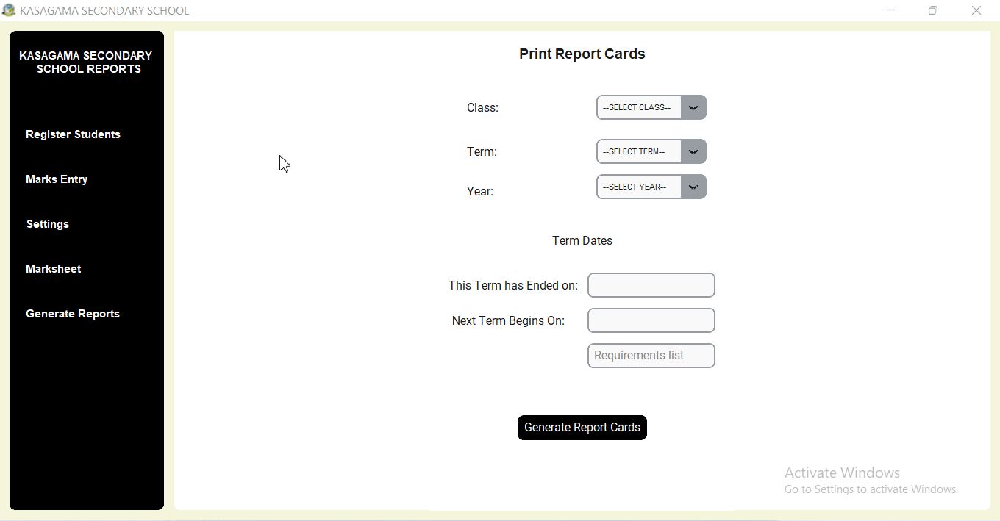
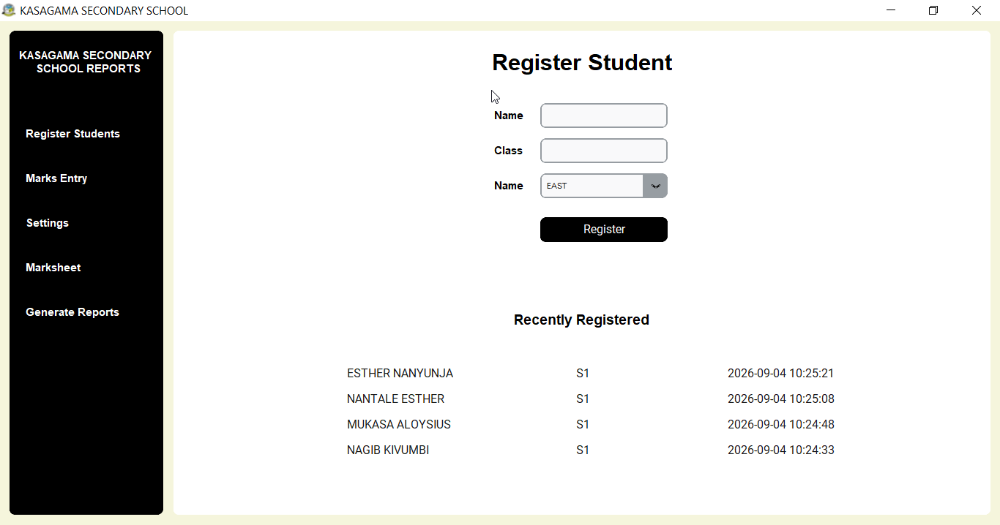
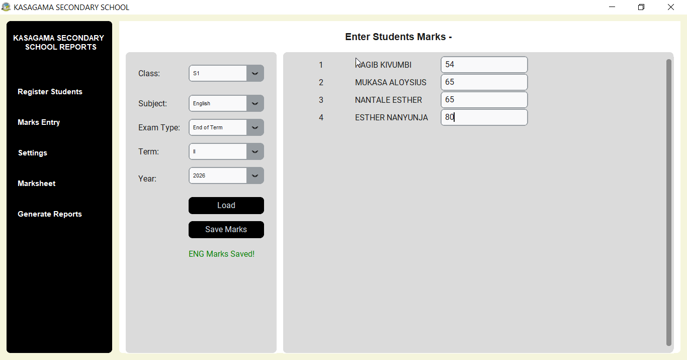
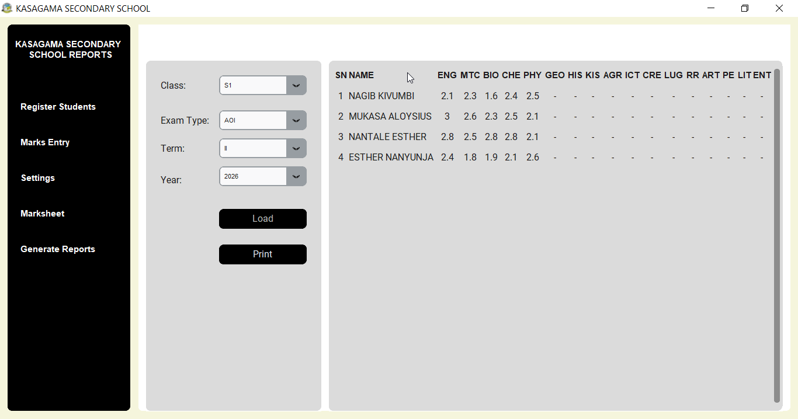
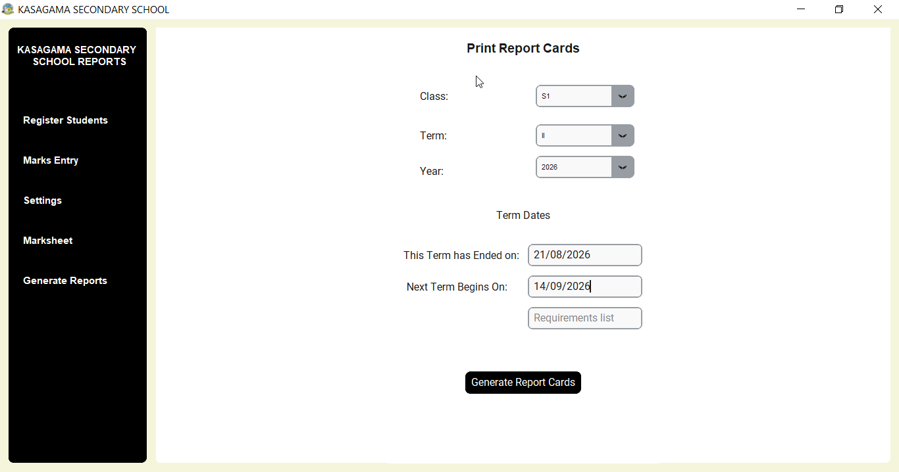

School Report cards made simple.
Shuleni helps primary and secondary schools enter marks, calculate results and produce clean, professional report cards with less paperwork and fewer mistakes. Shuleni follows the New Lower Secondary Curriculum report card guidelines .

Completely Offline. No Internet Required
Shuleni works offline. The school only needs a computer running Windows 10 or later. See additional system requirements for Shuleni Software.
Student Registration

Register new student only once and their record appears throughout the system. Type name and class in an case (all caps, lowercase, sentence case) and both will be automatically transformed to all caps.
The Registration section shows you the last 10 registered students. If you have class streams, you can attach a stream to a student during registration
Marks Entry

Easily enter marks by subject with Shuleni. Marks entry has been made very easy as you can navigate to the student by hitting Enter, Arrow Down, or Tab Keys.
You can also return to the previous field with Arrow Up key.
View Marksheet

The marksheet view feature allows you to view the entire results of a class in a selected exam. Click on a student to view an highlight of their marks.
Marksheet view will help you to quickly detect missing marks for individual students or the whole class.
Comments and Initials

Easily set initials for subject teachers. Set comments from the same section. Classteachers and the headteacher select suitable comments from a comments drop-down.
This fixes earlier challenges with comments management including monotonous comments, inconsistent commenting. Save comments once, uses for all classes.
Shuleni Automation

Shuleni automatically assigns grades and descriptors. Only subjects done by the student appear on the report card. Comments take into account performance in both AOI and End of Term Exams.
Report Card Generation

Generate very high quality report cards for the entire class with one button click. Reports can be generated and saved in PDF in the user's preferred location.
Shuleni Pricing
Shuleni Report Card Software is a buy-once-use-forever software. Schools do not have to pay monthly or termly subscription fees.
Shuleni is avalailable at a one-time fee of UGX 200,000. Learn more about our pricing here.
Try Shuleni today
Download the Shuleni Report Card Software Demo to findout how it can benefit your school.
Download DemoReady to get started??
Call or WhatsApp to get Shuleni setup for your school.